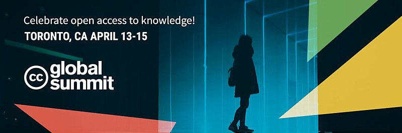
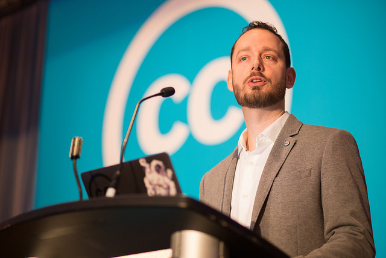

Hari Pertama Konferensi Tingkat Tinggi Dunia Creative Commons 2018 di Toronto, Kanada

Creative Commons Global Summit 2018 (CCGS 2018) atau (Bahasa Inggris) atau Konferensi Tingkat Tinggi Dunia Creative Commons 2018 (KTT Dunia CC 2018) kembali diadakan selama 3 hari yaitu tanggal 13-15 April 2018 di Delta Hotel, Toronto, Kanada.
Kembali diadakannya konferensi ini di kota yang sama semacam menjadi rangkaian kesuksesan konferensi tahun lalu yang tiket masuknya habis terjual. Berikut adalah statistik yang dapat dilihat untuk konferensi tahun lalu:
-
42 “anggota” komunitas ikut serta dalam pengembangan program acara untuk memilih lebih dari 100 progra yang melibatkan “anggota” lama maupun “anggota” baru.
-
Tiket untuk masuk ke konferensi ini kembali habis terjual dengan total hampir 400 peserta.
-
Terdapat 4 tokoh perempuan yang menjadi pembicara kunci, dan tidak ada satu pun sesi yang didominasi laki-laki.
-
Hampir 60 persen penerima beasiswa perjalanan membiayai keberangkatan peserta dari Afrika dan Amerika Latin.
Selain itu, terdapat pertimbang-pertimbangan lain yang menjadi alasan mengapa Creative Commons Internasional (CC HQ) memilih untuk kembali ke Toronto. Kurs dolar Kanada yang rendah mendukung daya beli para peserta konferensi yang merupakan pendatang. Hotel Delta Toronto, yang telah dengan baik menjadi rumah bagi konferensi ini pada tahun lalu, kembali menyediakan tempat untuk menyelenggarakan acara ini kembali. Kebanyakan dari peserta mendapatkan visa dengan masa berlaku yang panjang sehingga mereka dapat kembali ke Kanada tanpa harus mengurus kembali perizinannya. Dan yang terakhir adalah bantuan sekelompok orang yang dapat menyelenggarakan acara dengan skala sebesar ini dalam waktu 11 bulan tanpa dukungan yang signifikan dari CC HQ, kebanyakan dari kelompok-kelompok tersebut berfokus pada isi dari acara ini, bukan masalah birokratis acaranya.
Konferensi kali ini juga menjadi penanda berubahnya pola penyelenggaraan konferensi oleh Creative Commons HQ (CC HQ) yaitu menjadikan konferensi ini sebagai acara tahunan. Diharapkan intensitas waktu bertemu yang semakin padat ini dapat meningkatkan proses pembangunan komunitas CC di seluruh dunia. Dalam hal ini, CC HQ juga meningkatkan jumlah alokasi anggaran untuk beasiswa perjalanan supaya dapat mengakomodasi lebih banyak peserta dari seluruh dunia.
Kerja penyelenggaraan konferensi ini dibagi menjadi dua bagian. CC HQ menjadi “tuan rumah”, yaitu penyedia tempat, makanan, sistem promosi, beasiswa perjalanan dan peralatan lainnya. Sedangkan para “anggota” komunitas CC menjadi pengisi acara dengan program-program yang menyesuaikan dengan tema konferensi tahun ini. Hal ini diupayakan untuk lebih melibatkan “anggota” komunitas CC dalam acara yang menjadi bagian dari gerakan keterbukaan ini. Sebetulnya bulan April merupakan waktu yang amat penuh dengan konferensi (RightsCon dan Open Knowledge Festival), namun CC HQ berhasil menjadi salah satu bagian dari banyaknya rangkaian acara-acara tersebut.
Acara ini mengumpulkan lebih dari 450 “anggota” komunitas yang terdiri dari aktivis, pengacara, pengajar, pejabat pembuat kebijakan, dan pakar teknologi dalam lebih dari 110 sesi yang membahas tentang pendidikan terbuka, GLAM, pembaruan regulasi hak cipta, keterbukaan akses, masa depan komunitas keterbukaan, dan Jaringan Global Creative Commons.
Yang terlibat sebagai pengisi sesi-sesi pidato dalam acara adalah Katherine Maher (Direktur Eksekutif Wikipedia dan Yayasan Wikimedia, Chris Bourg (Direktur Perpustakaan MIT), dan Ruth L. Okediji (Profesor di Fakultas Hukum Universitas Harvard). Pada konferensi ini, CC HQ meluncurkan meluncurkan produk-produk terbarunya seperti Laporan Tahunan: State of the Commons 2017, Sertifikat Creative Commons untuk Pengajar dan Pustakawan, dan pengumuman penerima dana hibah Bassel Khartabil Free Culture Fellowship dan Memorial Fund. Pengumuman ini juga menghadirkan video eksklusif dari sutradara film dokumenter “Ayouni”, Yasmin Fedda. Film ini menceritakan kisah hidup Bassel dan Jesuit Priest Paolo Dall’Oglio, yang keduanya terbunuh di Suriah dalam tugas kemanusiannya. Dalam penyerahan dana hibah ini, Ryan Merkley (CEO Creative Commons) akan juga didampingi oleh istri mendiang Bassel, Noura Ghazi Safadi.
Wikimedia Indonesia mengirimkan perwakilan CC Indonesia Hilman Fathoni (HF) dan Fitriayu (FA) untuk menghadiri Konferensi Tingkat Tinggi Dunia Creative Commons 2017. Pembiayaan keberangkatan ini juga ditanggung oleh CC HQ dalam bentuk beasiswa perjalanan sebesar 1,5000 dollar Amerika untuk masing-masing perwakilan dari Indonesia. Konferensi ini dilaksanakan dalam tiga hari dengan tema yang berbeda di setiap sesi-sesi yang disediakan. Tema-tema itu adalah CC Global Network, CC & New Technologies, Future of the Commons, GLAM, Keynotes, Legal & Copyright Reform, Open Bazaar, Open Education & Open Access, Summit Special Events, unConferencing, dan User Centered Commons. Daftar-daftar kegiatan yang diikuti oleh dua perwakilan CCID di Creative Commons Global Summit 2017 dapat Anda baca di laman ini dan ini.
Laporan acara
Pada pagi hari pertama konferensi, peserta CCGS 2018 melakukan daftar ulang untuk mendapatkan tanda pengenal peserta dan paket konferensi seperti tempat pensil, pin, stiker, dan alat tulis. Dalam hal ini panitia juga menyediakan sesi berjudul “CC Summit for Newbies: First-Timers Breakfast”. Sesi ini ditujukan bagi peserta yang belum pernah mengikuti CCGS di tahun sebelumnya. Simeon Oriko selaku pemandu sesi ini menyambut para peserta sekaligus menjelaskan perkembangan komunitas CC secara singkat. Dalam sesi ini, Simeon juga memperkenalkan para pengurus CC HQ kepada para peserta “newbie”. Sesi yang santai ini menjadi ruang bagi para peserta untuk saling berkenalan satu sama lain sambil menikmati hidangan sarapan pagi.

Sesi pertama yang diikuti oleh Hilman adalah “CC Network Strategy – What’s Next”. Sesi ini dipandu oleh Evelin (Scann) Heidel, Ryan Merkley, Claudio Ruiz, dan Alek Tarkowski. Sesi ini ditujukan bagi para peserta yang ingin terlibat dalam pembicaraan lanjutan mengenai strategi JGCC (Creative Commons Global Network-CCGN). Pada sesi ini CC HQ mengajak para peserta bersama-sama menganalisis dan mengkritisi strategi jaringan global yang sudah ada, cara-cara untuk mengembangkannya, dan turut mengambil keputusan terkait pembentukan komunitas lokal yang baru serta pertemuan para Konsil Jaringan Global (Global Network Council) untuk pertama kalinya.
Pada saat yang sama, Fitriayu mengikuti sesi berjudul “Starting With the User: User Experience Methods as a Framework to Assess and Improve the Usability of CC Licenses + For the Users, by the Users”. Sesi ini diadakan dipandu oleh Ekatarina Grguric, Alexandra Kohn, dan Veethika Mishra. Sesi ini dibuka oleh Ekatarina Grguric dan Alexandra Kohn dengan pemaparan tentang sistem perpustakaan di McGill University yang pengaksesnya adalah 40.000 mahasiswa dari 150 negara. Pemateri juga memaparkan kategori pengguna CC di ranah akademis: pencipta sebagai orang yang menerapkan lisensi CC pada ciptaanya, pengguna sebagai seseorang yang berinteraksi dengan lisensi CC sehingga ia dapat menggunakan ciptaan yang berlisensi CC, pengguna sekaligus pencipta dan begitu juga sebaliknya, serta penyedia teknologi atau sarana atau ruang yang menjembatani akses untuk mendapatkan konten berlisensi CC. Pemateri juga menjelaskan bagaimana lisensi CC diterapkan, khususnya oleh civitas akamedika McGill University. Lisensi CC diterapkan pada buku dan artikel jurnal, digabungkan denga ciptaan lain untuk kepentingan penelitian, bahan ajar yang menjadi konten situs web, dan juga pada artikel-artikel dalam konteks publikasi. Selanjutnya pemateri juga menjelaskan bagaimana cara mengahadapi tantangan yang ada di komunitas mereka dalam mensosialisakikan lisensi CC: penyedian layanan konsultasi, pengembangan sumber pengetahuan daring, dan advokasi.
Kemudian, Hilman ikut serta dalam sesi yang membahas program CC Certificates, “CC Certificates for Educators, Librarians & Governments: Next Steps”, yang nantinya akan diadaptasi oleh CCID melalui program Training of Trainers Creative Commons Indonesia (CCID-ToT). Sesi ini dipandu oleh Paula Eskett, Regina Gong, Evelin (Scann) Heidel, Soohyun Pae, Doralyn Rossmann, Jennryn Wetzler, dan Maran Wolston. Tim CC HQ mengembangkan program Sertifikat Creative Commons dalam rangka menanggapi pertumbuhan penggunaan lisensi CC yang mendunia dan sebagai upaya untuk membantu pihak-pihak yang membutuhkan pengetahuan mendalam mengenai hal tersebut. Dalam sesi ini, Tim CC HQ akan menyediakan gambaran berjalannya program ini yaitu pendapat dari para partisipan awal sertifikasi, diskusi pelokalan konten Sertifikat Creative Commons, pembangunan program “train-the-trainer” untuk perwakilan lokal CC HQ di negara lain, dan proyeksi tentang bagaimana Sertifikat Creative Commons dapat menjadi salah satu program di perguruan tinggi untuk melatih para calon pengajar, pustakawan, dan ahli hukum.
Seusai sesi ini, Hilman yang merupakan manajer proyek Sertifikasi Perwakilan CCID (SPCCID) saat ini duduk bersama Jennryn Wetzler untuk mendiskusikan kelanjutan pemberian beasiswa sertifikasi pada 15 perwakilan dari program Training of Trainers Creative Commons Indonesia. Rencananya ke 15 penerima beasiswa tersebut akan menjadi partisipan dalam program sertifikasi Creative Commons dalam bahasa lokal yang akan pertama kali diselenggarakan di Indonesia secara daring pada tahun 2019. Dalam diskusi ini, pihak CC HQ yang diwakili oleh Jenn menyatakan setuju dengan program yang dilaksanakan oleh tim CCID. Langkah selanjutnya yang harus diambil tim CCID ialah pembayaran biaya sertifikasi untuk 15 penerima beasiswa sebesar 300 dollar amerika untuk setiap peserta. Selain itu, Hilman Fathoni, salah satu penerima sertifikat untuk pengajar dari Creative Commons harus menjalani dan lolos dari program “train-the-trainers” untuk kemudian berperan sebagai perwakilan pelatih dalam program Sertifikat Creative Commons di Indonesia. Dalam pembicaraan ini juga disinggung bahwa tim CCID juga harus siap untuk menerjemahkan konten kelas daring Sertifikat Creative Commons ke bahasa Indonesia pada akhir tahun 2018. Hal ini harus segera diupayakan agar versi lokal dari Sertifikat Creative Commons dapat segera diterima oleh 15 penerima beasiswa sertifikasi pada bulan Januari tahun 2019.
Pada jam yang sama, Fitriayu mengikuti “Best Practices for Creating and Collecting “Open” Digital Collections + Learn, Collaborate and Share: How We Active “Open” at the Toronto Public Library” yang dipandu oleh Allana Mayer, Ab. Velasco, Loren Fantin, Eric Schwab, dan Alex Carruthers. Pada sesi ini diceritakan keberhasilan lembaga-lembaga seperti OurDigitalWorld dan Toronto Public Library sebagai salah satu agen pendukung dalam gerakan keterbukaan. OurDigitalWorld mendukung pelestarian warisan kebudayaan melalui kerja-kerja digitalisasi. Organisasi ini bekerjasama dengan perpustakaan, lembaga arsip, museum , masyarakat pemerhati sejarah, dan elemen masyarakat dalam upaya penyediaan koleksi warisan budaya digital yang berkelanjutan dan inovatif. Toronto Public Library menjelaskan kegiatan rutin mereka yang merangkul komunitas-komunitas untuk turut serta mendukung gerakan keterbukaan. Adapun contoh kegiatan-kegiatan yang diadakan seperti Open Data Book Club, Handathon, dan Storytelling Jam. Pemaparan pada sesi ini memberikan banyak informasi dalam pengembangan gerakan Open GLAM di Indonesia. Keterlibatan secara holistik dari elemen masyarakat merupakan subjek kunci yang dapat mendukung gerakan Open Glam.
Fitriayu kemudian melanjutkan kegiatan dengan menghadiri sesi “Winning Sometimes Mean Letting Go: Identifying when to use open content licenses”, yang dipandu oleh Bob Tarantino. Sesi ini membahas dari proses pengambilan keputusan seorang pencipta ketika hendak melisensikan ciptaannya dengan lisensi terbuka. Pemateri berusaha membantu para pencipta mengidentifikasi hal tersebut sendiri dengan mengisi formulir panduan pengembilan keputusan untuk menerapkan lisensi CC. Dengan bahasa yang sederhana, melalui panduan tersebut nantinya akan terlihat bagaimana keterkaitan antara pemberi lisensi, ciptaan, komunitas, dan pasar. Hasil analisis dari keempat aspek tersebut akan memberikan gambaran yang rinci terkait keputusan yang akan diambil. Sesi yang didatangi selanjutnya ialah sesi “Advocacy Campaigns - Sharing Experiences, Failures and Victory” yang kebetulan dilaksanakan di ruangan yang sama. Pemandu sesi ini adalah Natalia Mileszyk. Pada sesi ini peserta dibagi menjadi beberapa kelompok untuk saling berbagi pengalaman terkait upaya penyebaran pengetahuan tentang lisensi CC di negaranya masing-masing. Yang menjadi temuan menarik dari sesi ini adalah adalah bagaimana seharunya pengetahuan serta kesadaran terkait perlindungan hak cipta seharusnya dimiliki terlebih dahulu oleh audiens sebelum menerima pengetahuan tentang lisensi CC. Di sesi ini, Fitriayu juga menemukan bahwa permasalahan yang dihadapi oleh advokat CC di Italia ternyata mirip dengan yang terjadi di Indonesia, di mana belum begitu banyak masyarakatnya paham dan sadar akan perlindungan hak cipta.
Di waktu yang sama, Hilman mendatangi sesi “How DOAJ Ambassadors and cc local communities can promote knowledge and usage of cc licensing in the Global South”. Sesi ini dibawakan oleh Kamel Belhamel, Tom Olyhoek, dan Florence Piron. Ilmu pengetahuan yang berasal dari bagian selatan dunia kurang mendapatkan ruang untuk tampil di ekosistem ilmu pengetahuan global. Hal yang serupa juga terjadi dalam lingkungan publikasi karya ilmiah di ranah Open Access. Para perwakilan lokal DOAJ (Directory of Open Access Journal) telah memberikan edukasi pada para penerbit di tempat mereka berada mengenai prinsip-prinsip publikasi artikel ilmiah yang baik berdasarkan prinsip-prinsip yang diterapkan oleh DOAJ. Pada setiap sesi edukasi tersebut juga ditambahkan materi mengenai penerapan lisensi CC yang baik pada aktivitas publikasi karya ilmiah. Dalam sesi ini, para pemateri berniat menyampaikan bahwa dengan kerja sama antara para perwakilan lokal DOAJ dengan “anggota” komunitas CC di negara yang sama dapat membantu penerapan lisensi CC dalam publikasi karya ilmiah menjadi lebih baik. Dengan begitu proses berbagi pengetahuan dalam ekosistem tersebut diharapkan dapat berjalan dengan lancar. Seusai sesi ini, Hilman Fathoni (Pemimpin Proyek Sertifikasi Perwakilan Creative Commons Indonesia), bertemu dengan Tom Olyhoek (Pemimpin Redaksi DOAJ) dan Florence Piron (Profesor dari Université Laval) untuk bertukar pikiran mengenai kerja sama antara perwakilan lokal DOAJ di Indonesia dengan CCID dalam suatu sesi lokakarya bagi para aktivitas publikasi karya ilmiah tentang prinsip keterbukaan akses. Keinginan Hilman disambut baik oleh kedua orang tersebut, dan dalam waktu dekat (tanggal Juli 2018) akan bertemu di suatu Konferensi Internasional mengenai publikasi karya ilmiah di Bogor untuk membahas langkah lebih lanjut mengenai hal tersebut. Pertemuan tersebut juga akan diikuti oleh perwakilan dari Relawan Jurnal Indonesia dan INA-Rxiv yang sebelumnya juga pernah bekerja sama dengan CCID dalam suatu lokakarya di Universitas Pattimura, Ambon dan lokakarya tentang publikasi terbuka di Institut Teknologi Bandung (ITB) bersama INA-Rxiv.
Mulai masuk ke waktu sore hari, Fitriayu menghadiri “CC for reals Users: Improving the Ways We Share Content on the Web” yang dipandu oleh Sarah Pearson, Eric Steuer, dan Jane Park. Pada sesi ini peserta dibagi menjadi kelompok-kelompok kecil. Tiap peserta pada kelompok tersebut diwajibkan menjawab beberapa pertanyaan mengenai bagaimana budaya berbagi dapat berkembang di ranah daring. Adapun pertanyaan-pertanyaan tersebut yakni:
-
Tantangan apa saja yang sedang orang-orang hadapi saat ini?;
-
Ide kreatif apa yang dapat CC HQ lakukan?;
-
Jika Anda memiliki kekuatan sihir, hal apa yang ingin Anda ciptakan untuk mempermudah orang lain dan mengapa?
Tiap kelompok menjawab pertanyaan-pertanyaan yang diajukan berdasarkan pembagian jenis-jenis konten digital. Ada kelompok yang menjawab pertanyaan mengenai foto, tulisan, dan mengenai teknologi buatan CC HQ yang sesuai dengan pengguna CC di masa depannanti.
Pada saat yang sama, Hilman kembali mengikuti sesi yang berkaitan dengan CC Certificates yaitu “CC Certificates: How to Adapt Them for the GLAM Community?” oleh Loren Fantin, Evelin (Scann) Heidel, dan Jennryn Wetzler. Proyek “Sertifikat Creative Commons” beserta peluncuran sesi percobaan pada awal tahun 2018 telah membuka wacana mengenai pengadopsian proyek tersebut di ranah keahlian selain “Educators” dan “Librarian”. Ranah GLAM (Gallery, Library, Archives, and Museum) telah menunjukan dari awal bahwa terdapat kebutuhan akan pengetahuan tentang lisensi CC dan Tanda Domain Publik Creative Commons beserta penerapannya dalam pengarsipan koleksi lembaga-lembaga tersebut secara daring dan digital.
Meskipun terdapat banyak lembaga-lembaga terkait yang dapat menjadi percontohan mengenai hal ini, tetap terdapat kesenjangan pengetahuan ketika kita melihat latar belakang kebudayaan, negara, dan regulasi lokal dari masing-masing institusi. Terdapat beberapa institusi GLAM yang menginginkan penerapan lisensi CC pada koleksi digital mereka, namun penerapan tersebut terhambat oleh prinsip-prinsip legal yang berlaku di negaranya. Dalam sesi ini dibahas bagaimana proyek Sertifikat Creative Commons dapat mengatasi permasalahan tersebut. Dan juga akan dibahas kebijakan seperti apa yang dapat mengakomodasi penyediaan konten oleh institusi GLAM dalam upaya memudahkan penemuan dan penggunaan kembali koleksi-koleksi mereka. Sebagai penutup, Hilman mengikuti salah satu sesi paling akhir yang diadakan pada hari pertama konferensi, yaitu “Dear Network Manager…” oleh Simeon Oriko. Sesi ini merupakan pemberian kesempatan kepada para “anggota komunitas” CC untuk menyampaikan pendapat mereka mengenai kinerja Manajer Jaringan Global CC, Simeon Oriko. Dalam sesi ini juga, partisipan dipersilakan untuk memberikan usulan mengenai apapun untuk meningkatkan perannya di Jaringan Global CC.
Catatan: Beberapa notulensi dari sesi-sesi ini dapat Anda akses dengan membuka tautan pada setiap judul sesi yang disebutkan.
Tags:
Oleh: Creative Commons Indonesia
13 Jul 2018Kategori:
Berita Terbaru
- Lokakarya Hak Cipta dan Lisensi Creative Commons di Pekanbaru
- Pengumuman Resmi: Hasil Akhir Training of Trainers Creative Commons Indonesia
- Literatur tentang Model Bisnis Terbuka "Made With CC"
- Data dan Artikel Ilmiah Terbuka dari PLOS!
- Konten Format Model 3 Dimensi Berilsensi CC di Platform Sketchfab